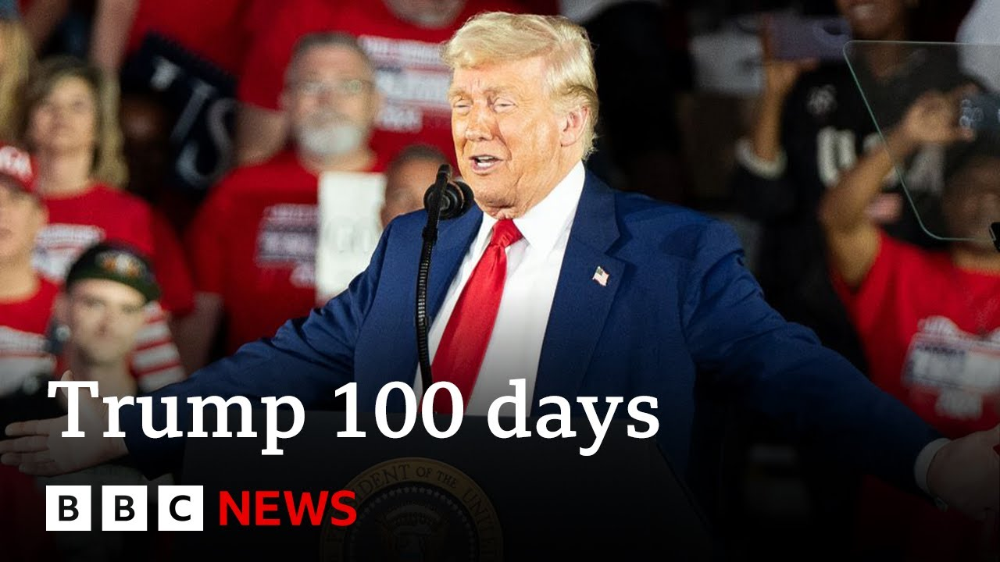

来B站一起耍【Global每日英语简报】
【特朗普执政百日演讲被BBC核查事实 | BBC新闻】
Summary: President Trump celebrated his first 100 days in office, claiming his administration's achievements were a "revolution of common sense," but his approval ratings are the lowest for any president in nearly 70 years.
摘要： 特朗普总统庆祝执政百日，称其政府的成就是一场“常识革命”，但他的支持率是近70年来所有总统中最低的。

⏱️ Estimated Reading Time: 8 min
President Trump has told supporters that his administration's achievements amounted to a revolution of common sense as he celebrated his first 100 days in office.
特朗普总统在庆祝执政百日时告诉支持者，其政府的成就堪称一场“常识革命”。
Speaking of Michigan, Mr. Trump insisted his tariff policies were a success, declaring to the crowd, "You ain't seen nothing yet."
谈到密歇根州，特朗普坚称他的关税政策取得了成功，并向人群宣布：“你们还没看到真正的成果。”
However, his approval ratings at 100 days are at the lowest level for any president for nearly 70 years.
然而，他的百日支持率是近70年来所有总统中最低的。
Donald Trump also attacked the legacy of his predecessor, Joe Biden, while claiming no other president had achieved more during their first few months in office.
特朗普还抨击了前任总统拜登的政绩，同时声称没有其他总统在执政头几个月取得过更多成就。
That is something we will be fact-checking in just a moment.
我们稍后将对此进行事实核查。
But first, let's have a listen to Mr. Trump.
但首先，让我们听听特朗普的讲话。
We're here tonight in the heartland of our nation to celebrate the most successful first 100 days of any administration in the history of our country.
今晚我们来到国家中心地带，庆祝我国历史上任何政府最成功的执政百日。
And that's according to many, many people.
这是许多人公认的。
So that statement clearly is a matter of opinion.
显然，这一说法属于主观观点。
Mr. Trump went on to make a number of other very specific claims regarding his achievements in office ranging from inflation to immigration.
特朗普接着就其在通胀和移民等领域的政绩提出了一系列具体主张。
BBC verifies Jake Horton has been fact-checking Trump's 100-day speech.
BBC核查员杰克·霍顿一直在核实特朗普的百日演讲。
A lot of you have been reading his article on the BBC news website.
许多人一直在BBC新闻网站上阅读他的文章。
Jake, let's start firstly with the price of petrol which was something that was mentioned by Mr. Trump.
杰克，我们先从特朗普提到的汽油价格开始。
So tackling inflation was a key issue in the campaign and it's a key issue for the administration in their first 100 days and on specifically on the price of gasoline in the US.
解决通胀是竞选中的关键议题，也是政府执政百日的重点，尤其是美国的汽油价格。
So petrol, President Trump said this last night.
关于汽油，特朗普总统昨晚是这样说的。
So gasoline prices are down by a lot.
汽油价格大幅下降。
We just hit 198 in a lot of states.
许多州的油价已降至1.98美元。
Think of it.
想想看。
So both of those things are not accurate.
这两点都不准确。
So, the price of gasoline from the day that Trump entered office to this week has actually ticked up slightly.
事实上，从特朗普就职到本周，汽油价格略有上涨。
According to the American Automobile Association, which tracks this sort of thing.
根据追踪此类数据的美国汽车协会统计。
On the 20th of January, the day that Trump entered office, the average gas price, regular gas price in the US, was $3.13, around about that.
1月20日特朗普就职当天，美国普通汽油平均价格约为3.13美元。
And this week, it stands at $3.16.
而本周价格为3.16美元。
So, not up massively, ticked up slightly, but certainly not way down, as Trump said in that clip.
涨幅不大，略有上升，但绝不像特朗普在讲话中说的那样大幅下降。
And he also made a very specific claim about gas prices in certain states.
他还特别提到某些州的汽油价格。
And he said they are they're down to $1.98 in a lot of states.
他说许多州的油价已降至1.98美元。
And the same association which tracks gas prices across the US also breaks it down state by state.
同一家追踪全美油价的协会也提供了各州数据。
And there's no evidence that any state has an average gas price that low.
没有证据表明任何州的平均油价如此之低。
The lowest state is Mississippi.
油价最低的州是密西西比州。
In Mississippi, the average gas price at the moment this week is $2.67.
本周密西西比州的平均油价为2.67美元。
So a fair bit off that $1.98 that Trump quoted in his rally last night.
与特朗普昨晚集会中提到的1.98美元相差甚远。
What about immigration?
移民方面呢？
On immigration.
关于移民。
Obviously, another major campaign issue and an issue for the administration.
这显然是竞选和政府的另一重大议题。
And on his record on immigration in his first three months in office, President Trump said this last night.
关于执政头三个月的移民政策记录，特朗普总统昨晚这样说。
We've set all-time records for the lowest number of illegal border crossings ever recorded.
我们创下了有记录以来非法越境人数的最低纪录。
Think of that.
想想看。
Ever recorded.
有史以来最低。
Is that true?
这是真的吗？
Now, that is backed up by US Border Patrol statistics.
美国边境巡逻队的统计数据支持这一说法。
So last month in March as well as in February, the first two full months Trump was in office, immigration numbers have reached record lows.
特朗普执政后的前两个完整月份——2月和3月，移民数量创历史新低。
We have a graphic we can show you of that.
我们有相关图表可以展示。
That's actually a graphic to do with Doge, but we do have an immigration chart which shows the level of immigration in March.
这其实是关于Doge的图表，但我们确实有显示三月移民水平的图表。
The amount of encounters crossing the US border hit 7,000, just over 7,000 migrants crossed the US border and were encountered by Border Patrol.
越境遭遇数为7000人，略超7000名移民越境并被边境巡逻队拦截。
So that is the lowest on record since monthly records began in 2000.
这是自2000年有月度记录以来的最低值。
Compared to the Biden administration for context, the monthly totals in March last year were around 140,000.
作为对比，去年3月拜登政府时期的月度总数约为14万。
So a significant drop.
可见显著下降。
Trump said it was the lowest ever.
特朗普称这是有史以来最低。
Migration policy think tanks which track these sort of things say that it certainly is the lowest since records began on monthly data.
追踪此类数据的移民政策智库表示，这确实是有月度记录以来的最低值。
They do say if you look back to the 1960s the average monthly totals were lower but it certainly is a significant drop in recent times that Trump administration's overseas.
他们指出，1960年代的平均月度总数更低，但特朗普政府时期的数据确实是近年来的显著下降。
You mentioned there Jack Doge the department of government efficiency very controversial and the connection to Elon Musk of course let's have a listen to what President Trump had to say about that they've saved $150 billion on waste fraud and abuse doge $150 billion of savings.
你提到的政府效率部门Doge颇具争议，当然还有与埃隆·马斯克的关联。让我们听听特朗普总统对此的说法：他们通过Doge节省了1500亿美元的浪费、欺诈和滥用开支。
So this is the government initiative by Elon Musk which aims to dramatically cut US government spending.
这是埃隆·马斯克提出的政府倡议，旨在大幅削减美国政府支出。
On the campaign trail, Musk initially said it would cut $2 trillion from the US federal government budget.
竞选期间，马斯克最初表示将从美国联邦政府预算中削减2万亿美元。
He later revised this down to1 trillion.
后来他将其修正为1万亿美元。
And Doge's website at the moment said they've cut so far about $160 billion from the federal government budget.
而Doge网站目前称，他们已从联邦政府预算中削减约1600亿美元。
Now that is around about the ballpark that President Trump quoted in his clip there.
这与特朗普在讲话中提到的数字大致相符。
But it's important to say that a lot of these savings according to BBC Verifi's analysis are not actually backed up by any solid evidence.
但需要指出的是，BBC核查发现这些节省金额大多缺乏确凿证据支持。
So as you can see in this graphic out of that $160 billion total which is on DOJ's website only about $60 billion dollars of that are broken down by individual savings and only about half of that total has a receipt attached as proof.
如图所示，司法部网站上列出的1600亿美元总额中，仅约600亿有具体节省项目明细，其中又只有约半数附有收据作为证明。
So they say $160 billion, but it's very hard to independently verify that without any solid proof for a lot of those claim savings.
因此，虽然声称节省1600亿，但由于缺乏实质证据，很难独立核实大部分节省金额。